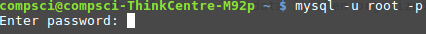
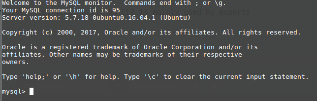
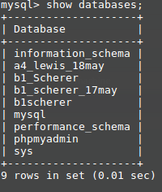
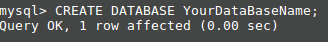
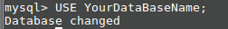
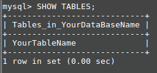
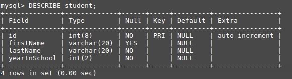
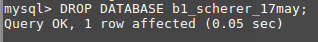
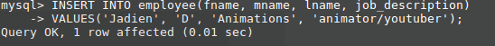
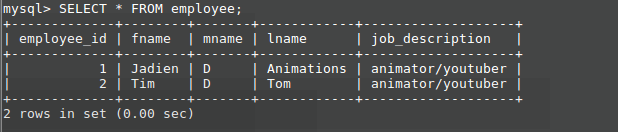

Full Stack development By: Zachary S.
Full Stack is a front end and back end developer
I want to be a Full Stack Developer
To code it is my real test, To run it is my cause
I will code across the land, with programs large and small.
Each language will understand the power that's inside
Full Stack, got a code it all!
It's you and me.
I know it's my destiny
Full Stack!
Task List (remove when done):
- Use Google Fonts
- Use a good, relevant background picture
- Link to sites or pages for more info
- In an INTERESTING way explain "full"
- In an INTERESTING way explain "stack"
- In an INTERESTING way explain "LAMP Stack"
- Make in-line links to the key words used in these explantions
part 2
- Explain "Database" in general using both text and illustration
- Explain MySQL with text and illustration
- Explain SQL with text and illustration
- Explain PHP with text and illustration
What does "Full" mean?
The "Full" in full stack means that everything that a web designer can do, is done. This would include front end codeing which includes HTML5, CSS3, and JavaScript. This front end coding is everything that you the viewer sees. The front end is also known as the client and this is where information from the web page is being sent to, but full stack is not just coding front end. It also includes back end coding or sever side coding. This coding commonly includes PHP, MySql, and Oracle languages. This can very depending on what stack or sever your using. The Sever side is everything you the veiwer doesn't see and is where amny of your passwords and other things are stored. Here is an image for this.
{kind=link}
What does "stack" mean?
The "stack" in full stack is a term that describes what programs that a programer is using. This is exspecially important since there is a varity of different programs that do the same thing. So to be able to tell what programs/languages are being used, stacks were created. The programs used in this stack is HTML5, CSS3, JavaScript, PHP, and MySql. Here is an images for this.
{kind=link}
What does "LAMP" stack mean?
The LAMP stack is a kind of stack that is used in server side programming. The L in the LAMP stack stands for Linux which is the operating system that many programmers use. The A in LAMP stands for the Apache web server. This the web server used for uploading web sites and also the use of servers since it is one. The M in LAMP stands for MySql. MySQL is the server language that is used for teh storing of data and other server related things. The P in LAMP is the PHP language. The PhP language is the language that is used within the website itself all though you never see it. Here is an image for this.
{kind=link}
Start of checkpoint 2
What is a database?
Databases are how computers store large amounts of information without having massive text files that would take up huge amounts of space. Databases are used in companies to store sales information and information about employees. You use databases when every you upload something to Google Drive or any software of the sort. Many databases use tables to organize their information and they can store large amounts of information.
What is MySQL?
MySQL is a one of the many kinds of databases out there. It also is the second most commonly used database only behind the Oracle database. It is completly free and there are many tutorials for it making it easier to learn. It also uses the command line when coding in MySQL.
What is SQL?
SQL is the universal programming langauge that many databases run off of. SQL stands for Structured Query Language.The Sturctured stands for it being set up in a standred way. This often times has the database as a table. Query is a request to a computer. The querys you use are the requests that give information to you. So when you want Joey's information you use a Query. Almost every database uses this and MySQL is built apon this language.
What is PHP?
PHP one of the many programming languages that connects the front end to the back end. PHP is the most common of these. What PHP does is that it reads the HTML forms and gives that information to the server. PHP can also read the database you use and uses that information to give information back to the HTML.
how does a MySQL table work?
The MySQL table works by having rows and colmumns in which the data is organized by their topic and other factors. The data is then organized and put into cells. This look like an Excel file but it is much more complicated than that.

MySQL from the CLI (Command Line Interface) -- NTS, sturcture when done
1. The User Interface for DB's are HTML pages 2. The CLI is where the Power Users can see inside of the DB but in a very primitive, just text, way. The CLI is mainly used by experts
- $mysql -u root -p (press enter)
- $password: (type in toor. No text will be shown) 
- mysql: 
- Open SQL in W3Schools
- mysql> show databases; 
- mysql> CREATE DATABASE YourDataBaseName; 
- mysql> USE YourDataBaseName; 
- mysql> SHOW TABLES
-
9. mysql> CREATE TABLE YourTableName ( -> id int(8) PRIMARY KEY NOT NULL AUTO_INCREMENT, -> column1 varchar(20), -> column2 varchar(20) NOT NULL, -> column3 int(2) NOT NULL, (Editor's Note: Don't add a comma if this is your last column) .... -> );
- mysql> SHOW TABLES; 
- mysql> DESCRIBE YourTableName; 
- mysql> DROP DATABASE YourDataBaseName; 
- mysql> INSERT INTO YourTableName(column1, column2, column3)
-> VALUES('Tom', 'ate', 'aTomato');

- mysql> SELECT * FROM YourTableName; 
Here is a visual for a full stack dev.